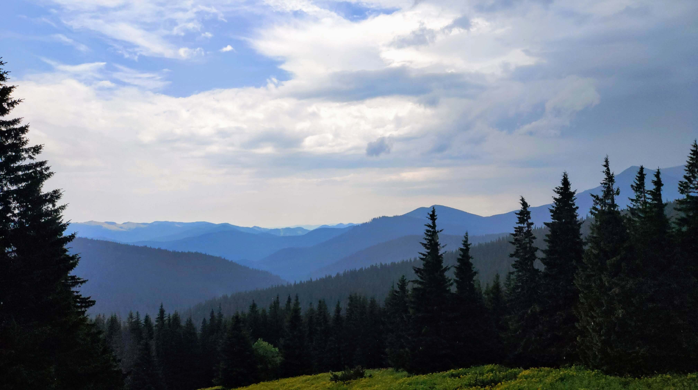
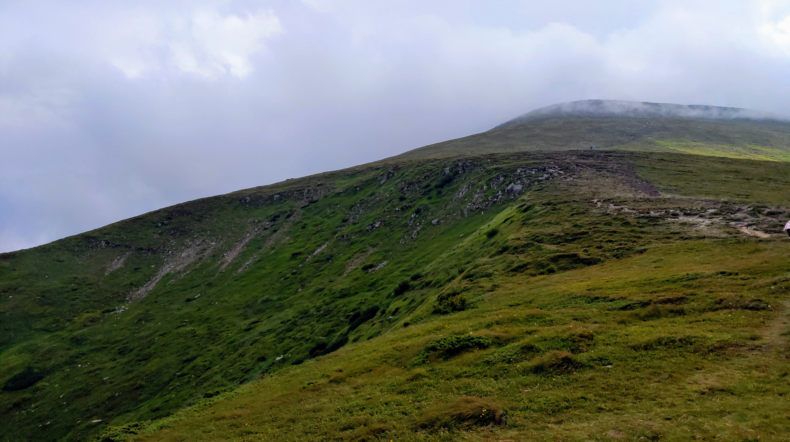

Beauty in simple things
I really like the colors in this photo.

And here is a macro photo
This is how you can photograph bees without a macro lens!

And here is another macro photo taken by me
In the morning after the rain, there are such droplets on every blade of grass.

Aktovsky Canyon
Amazing primeval nature of the area in which I was born.

Sinyak Ridge
To take such a photo, you need to climb to a height of 1600 meters along untraveled paths.

Untouched nature of the Carpathians
Photographing reflections is very difficult, but it turns out something incredible.

"Forest Park", Vinnitsa
And they say that nature is imperfect.

And again the Carpathians. Photo taken in the early morning.
This is the highest mountain range in Ukraine. I still remember this hike.

Mount Hoverla
The highest mountain in Ukraine. How difficult it is to take such a photo!
My photos